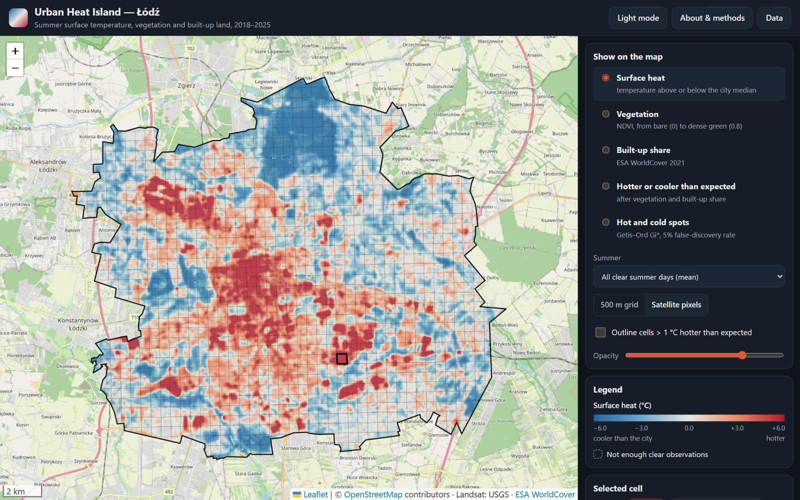
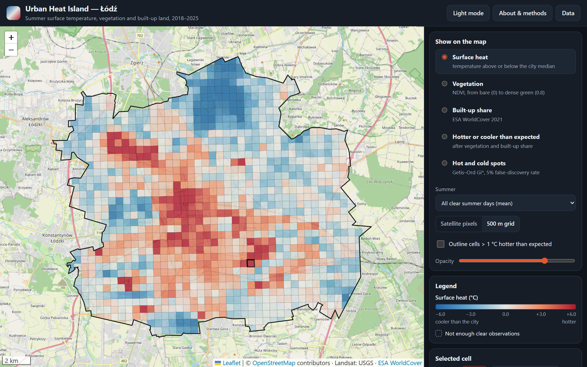
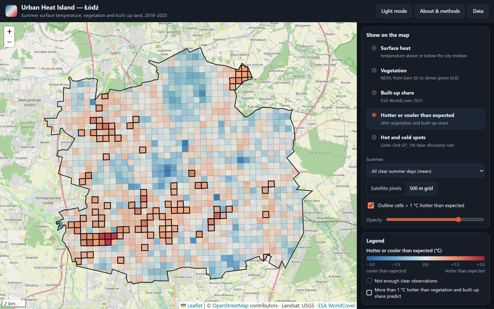
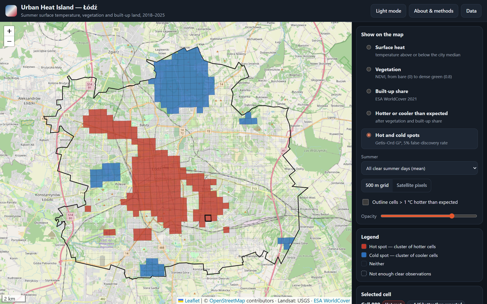
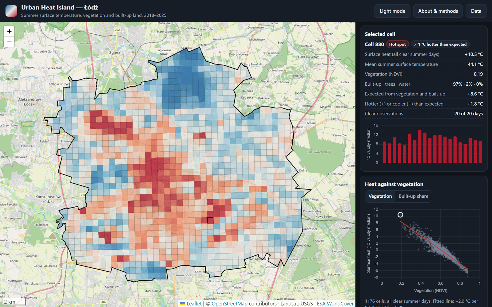
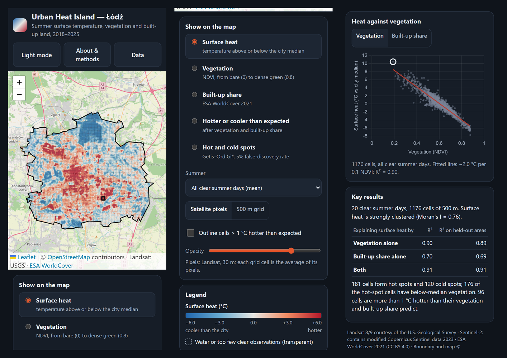
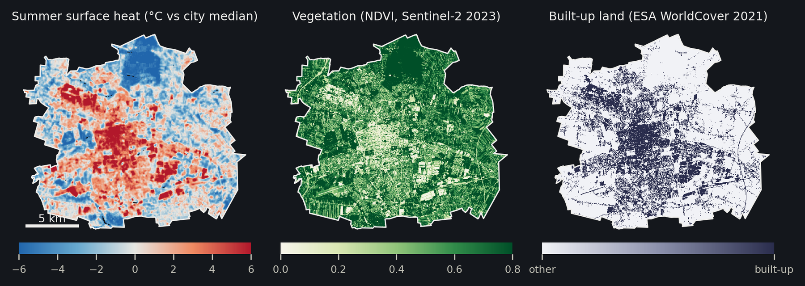
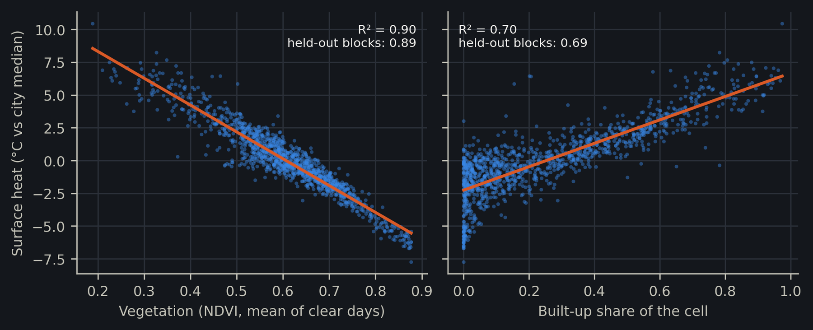
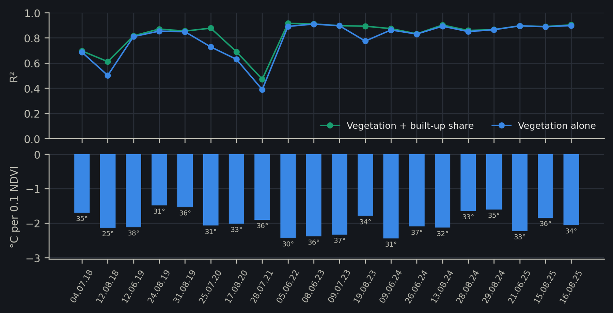
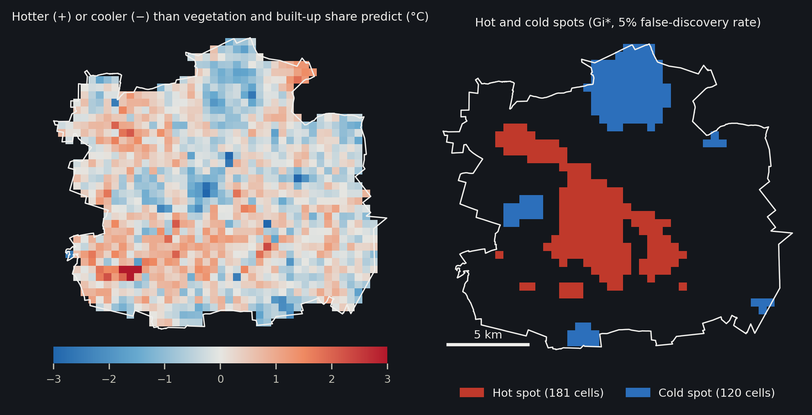

Urban Heat Island — Łódź
Twenty clear summer days of Landsat surface temperature (2018–2025) on a 500 m grid across Łódź: vegetation explains about 90% of where the city is hot, and the rest shows where it is hotter or cooler than its greenery predicts.
Overview
What this project does
An open Python pipeline downloads every clear summer Landsat scene of Łódź from 2018 to 2025, measures surface temperature and vegetation from the same scenes, and compares temperatures as anomalies from each day's city median on a metric 500 m grid. Built-up share comes from ESA WorldCover. Regressions are checked with spatially blocked cross-validation, and Getis–Ord Gi* maps significant hot and cold spots. An interactive web map shows surface heat, vegetation, built-up share and the places that are hotter or cooler than expected, cell by cell and day by day.
Research questions
What I set out to answer
- How much of the spatial pattern of summer surface heat do vegetation and built-up land explain — and what does built-up land add to vegetation?
- Is the relationship stable across clear days, cell sizes and data sources?
- Which places are hotter or cooler than vegetation and built-up land predict, and where are the significant hot and cold spots?
- Can the whole analysis be rebuilt from open data and explored in a browser?
Key findings
What the study showed
- Vegetation alone explains about 90% of where Łódź is hotter or cooler (R² = 0.90, also on held-out 2 km blocks): about 2 °C less surface heat per 0.1 NDVI. Built-up share adds only one percentage point.
- The relationship holds on most single days (median R² 0.85), at 250–1000 m cells, without edge cells and with Sentinel-2 vegetation.
- What vegetation does not explain is organised in space: the dense historic centre is cooler than expected, the airport and large industrial sites are hotter.
Application
Screenshots
Click any image to zoom in.









